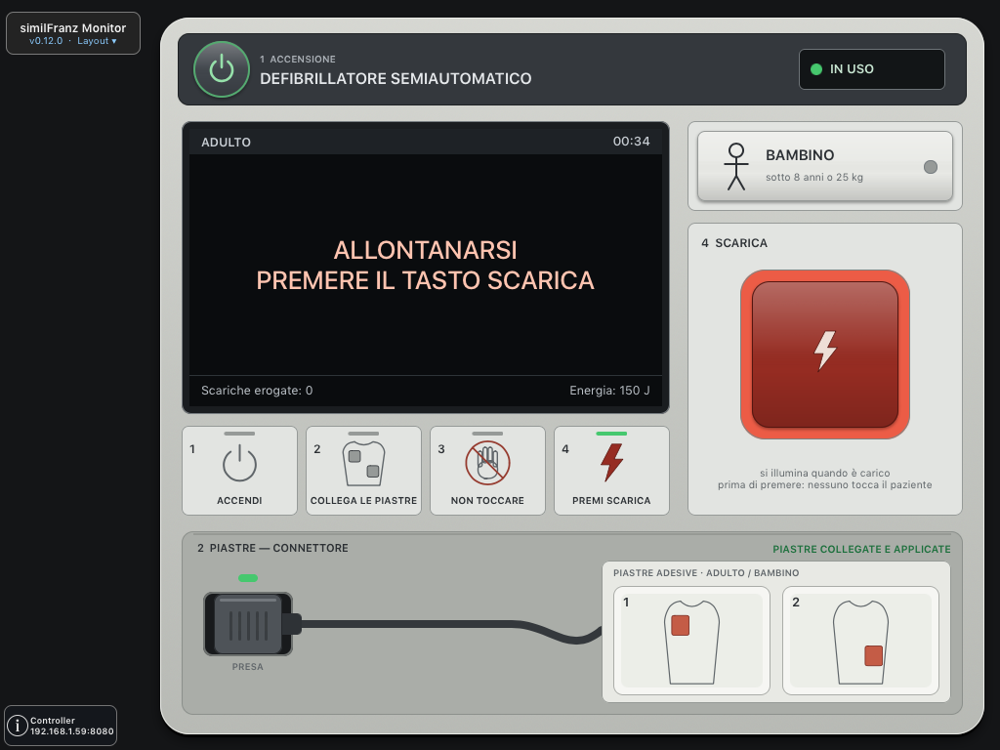
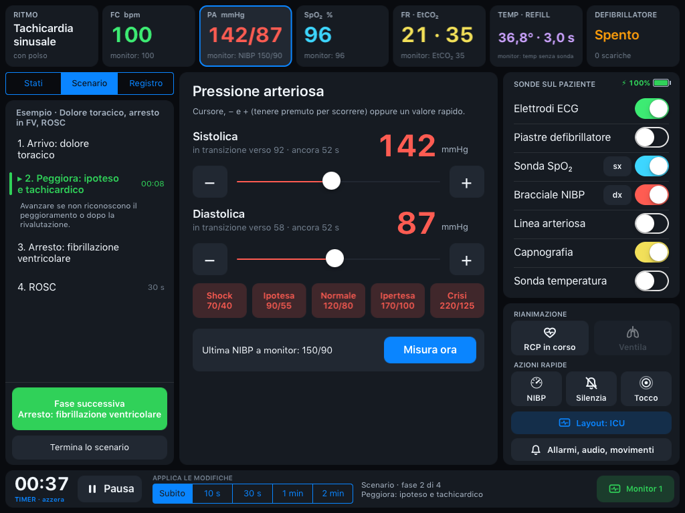
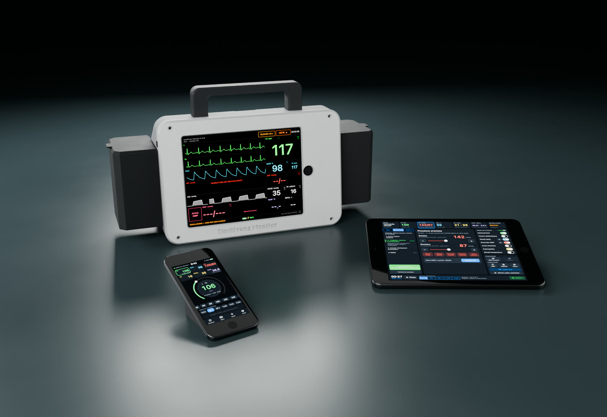

Quel vecchio iPad mini® ha ancora molte vite da salvare.
Per finta, e proprio per questo sul serio. Un iPad® diventa il monitor-defibrillatore che i partecipanti usano davvero; un secondo iPad è la regia del facilitatore, che conduce lo scenario e raccoglie i fatti per il debriefing. Si parlano direttamente, anche dove il Wi-Fi® è un ricordo.
Solo per la simulazione sanitaria: non è un dispositivo medico, non misura e non eroga nulla.
Doppia visione: la regia conduce lo scenario, il monitor risponde in tempo reale.
Il monitor
Si comporta come quello vero, anche quando qualcosa va storto.
La NIBP si gonfia e misura, gli allarmi suonano con la loro priorità, in arresto la saturazione sparisce e l'EtCO₂ crolla. Il defibrillatore carica, scarica, sincronizza e fa pacing: che cosa succede dopo, lo decide l'istruttore.
ICU · monitor da terapia intensiva con defibrillatore a scomparsa
extraH · monitor-defibrillatore da emergenza territoriale

DAE · semiautomatico con voce guida
I tre layout sono disegnati per questo progetto: non riproducono nessun dispositivo in commercio. Il sistema è aperto, e un frontale diverso per le esigenze formative del tuo centro si può scrivere partendo da uno di questi.
La regia del facilitatore
I valori reali del paziente simulato, sempre sotto gli occhi.

Sul secondo iPad: tocchi una tessera e la regoli.
Subito o con calma
Applica subito, oppure in 30 secondi
Prepari più modifiche, scegli in quanto tempo devono avvenire e le fai partire insieme. I ritmi di arresto partono sempre subito.
Le sonde le applichi tu
Il monitor mostra solo ciò che è collegato
Sotto ogni valore vero leggi che cosa vede chi è al monitor. E il lato conta: il bracciale sullo stesso braccio della sonda le toglie il segnale.
Senza il secondo iPad
La regia web, dal computer
Computer e monitor sulla stessa rete Wi-Fi: scrivi nel browser l'indirizzo che il monitor ti mostra, poi il PIN. Schermo grande per scenari, registro e aggiornamenti.
Più regie, nessun conflitto
Comanda una regia alla volta, e tutti sanno quale
Aprire una regia non toglie il comando a nessuno. Chi ha dato un comando nell'ultimo minuto è protetto: gli altri toccano «Prendi il comando». Chi è fermo da più di un minuto non blocca nessuno. Chi perde il comando lo vede subito, con «Riprendi», e ogni passaggio resta nel registro.
La regia in tasca: similFranz Pocket
Su un iPod touch® di 5ª generazione, per le simulazioni volanti. Tocchi il parametro e giri la rotella con il pollice: piano un'unità, veloce a salti, un clic a ogni scatto. Sotto, i valori clinici a un tocco e il tempo della transizione.
Il Pocket in azione (velocità 2×): la FC sale a 124 in 10 s, la SpO₂ scende a 86, poi FV.

Monitor, regia su iPad e regia tascabile: collegati insieme, comanda una regia alla volta.Dal portatile: la regia web servita dal monitor stesso, con la figura del paziente per posizionare le sonde.
Scenari a fasi
Lo scenario lo conduci tu, non un cronometro.
Costruisci le fasi prima, anche partendo dai valori del momento. In sala resti in una fase finché non decidi di passare alla successiva, e nel frattempo ritocchi a mano quello che serve.
Ogni fase ha il suo ritmo, i parametri che cambiano, il tempo che ci mettono e una nota per te: «avanzare quando hanno dato l'ossigeno».
Il costruttore: una fase, i suoi parametri, la tua nota.
Registro e debriefing
Alla fine sai com'è andata, al secondo.
Quello che fanno i partecipanti viene annotato da solo. Quello che osservi tu lo aggiungi con un tocco. Una sessione per ogni simulazione.
00:09PazientePaziente senza polso: arresto cardiaco
00:16AzioneRiconosciuto l'arresto cardiaco
00:22AzioneIniziate le compressioni
00:31FarmacoAdrenalina 1 mg
00:40ElettricaCarica 150 J — partecipanti
00:50ElettricaShock 1: 150 J — partecipanti
00:50PazienteIl paziente ha di nuovo il polso (ROSC)
Dall'arresto
7 s al riconoscimento
I tempi delle azioni critiche sono già calcolati: riconoscimento, prime compressioni, prima scarica, ROSC.
Da solo
Le scariche con la loro energia
Carica, scarica, pacing, analisi del DAE, sonde applicate, pressioni misurate: finiscono nel registro senza che tu faccia nulla.
Con un tocco
Punti di forza, punti da discutere
Li segni mentre guardi lo scenario, e al debriefing li ritrovi al minuto giusto.
Il metodo, prima dello strumento
Segue il ciclo della simulazione: prebriefing, scenario, debriefing.
Prebriefing
Chi conosce lo strumento si sente al sicuro
Presenti il dispositivo al gruppo: come si accende, dove si collegano le sonde, che cosa può fare. Chi si sente al sicuro impara.
Scenario
Fedeltà funzionale, i segnali al momento giusto
Il monitor risponde alle azioni come nella pratica clinica. Tu dai i segnali clinici quando servono e tieni lo scenario sugli obiettivi di apprendimento.
Debriefing
Si parte dai fatti
«Dall'arresto al riconoscimento sono passati sette secondi: che cosa ve l'ha fatto capire?» I dati aprono la riflessione, il gruppo la costruisce.
Riuso
Ce n'è uno in quasi ogni cassetto.
In dieci anni Apple® ha venduto oltre 500 milioni di iPad. Il mini è arrivato nel 2012: tre milioni di iPad in tre giorni, due su tre mini secondo gli analisti. Dal 2016 è fermo a iOS 9, e per molti è diventato un soprammobile.
Per la simulazione è perfetto: uno schermo da 7,9 pollici, un altoparlante, il Wi-Fi e una batteria che regge una sessione. Ogni iPad che torna in sala è un dispositivo in meno tra i 62 milioni di tonnellate di rifiuti elettronici prodotti in un anno.
In alto il prototipo vero, stampato in casa; sotto il render e il disegno tecnico. Con una stampante 3D diventa un monitor trasportabile: il guscio.
Guida rapida per l'istruttore
Dalla valigia allo scenario in cinque minuti.
Quello che serve sapere il giorno del corso. I dettagli sono nella guida all'uso.
01 Prima dei partecipanti
Accendi i due iPad e apri le app: il controller trova il monitor da solo e si collega. Wi-Fi e Bluetooth® accesi, nessuna rete necessaria.
Scegli il layout: ICU, extraH o DAE (tasto Layout sul controller).
Nella vista Scenario scegli lo scenario, oppure costruiscilo con Nuovo scenario.
Il monitor resta spento: lo accendono i partecipanti, come in reparto.
02 Prebriefing
Mostra il monitor: accensione, prese delle sonde, NIBP, allarmi, defibrillatore.
Dichiara che cosa è simulato: le sonde le «colleghi» tu quando le vedi posizionate, e il refill si legge toccando il riquadro o chiedendolo a voce.
Ricorda che si lavora in un ambiente sicuro: l'errore è materia di apprendimento.
03 Durante lo scenario
Sonde: interruttore quando vedi applicare elettrodi, saturimetro, bracciale, piastre.
Parametri: tocca una tessera in alto; Subito oppure 30 s per un cambiamento graduale.
Fasi: Fase successiva quando il gruppo è pronto. Non avanza mai da sola.
Arresto: RCP in corso quando iniziano le compressioni, Ventila a ogni insufflazione: solo allora compaiono capnogramma ed EtCO₂.
Scariche: le erogano i partecipanti. Con «Decido io» il controller ti chiede l'esito dopo ogni scarica.
04 Annota mentre osservi
Vista Registro: un tocco per arresto riconosciuto, chiamata d'aiuto, farmaci, vie aeree.
Punto di forza… e Da discutere…: due parole, e restano al minuto giusto.
Il resto lo annota il monitor da solo: sonde, NIBP, cariche, scariche con l'energia, pacing.
05 Debriefing
Apri Piano di debriefing: tempi dall'arresto al riconoscimento, alle compressioni, alla prima scarica, al ROSC; scariche, farmaci, punti segnati.
Parti dai punti chiave e lascia che sia il gruppo a ricostruire: «che cosa vi ha fatto capire che era un arresto?».
Ogni scenario avviato apre una sessione nuova; le precedenti restano consultabili e scaricabili in testo dalla pagina web.
Come si costruisce
Quattro passi, un fine settimana.
Ti servono un iPad mini di 1ª generazione (due, se vuoi anche la regia su iPad; un iPod touch di 5ª generazione per la regia tascabile) e, una volta sola, un Mac® o un PC Linux® per la prima installazione: poi gli aggiornamenti arrivano senza cavi. Nessun account sviluppatore, nessun abbonamento, nessun internet durante l'uso.
Poi le versioni nuove arrivano dalla regia web sul computer, con un clic, senza cavi: il monitor le passa anche a controller e Pocket. Come si aggiorna
Una famiglia
Vecchi dispositivi Apple che tornano in sala.
similFranz è nato con un saturimetro su iPod touch 4. È pensato per formatori, istruttori e facilitatori di simulazione, e per chiunque abbia un vecchio dispositivo da rimettere al lavoro.